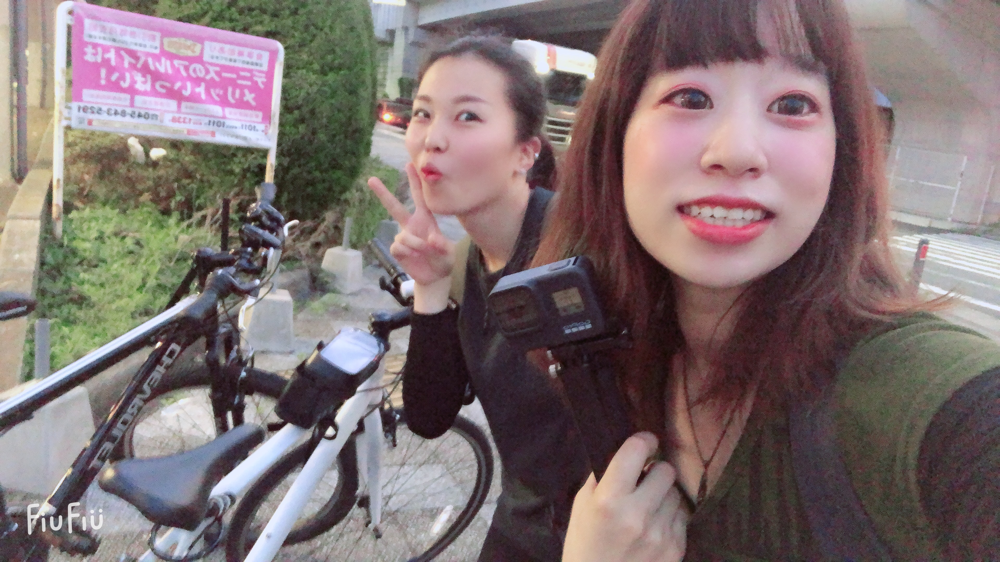

GoProHERO8 Black 購入しちゃいました！！

Goproでやりたいこと
①
とにかく好きなものの動画を撮りたい！
②
動画編集に触れてみたい！
③
最終的にはCMを作れるようになりたい！
といっても、なぜGoProを始めたのかは自分でもよくわからない笑
ただ、写真では残す事のできない思い出を”何か残せないか”と考えた時、真っ先に思いついたのが”動画”であった。
できるだけ、その時にみた風景、景色
その時に感じた、楽しさや素晴らしさを
動画で第三者に伝えていけたらなというのが
とりあえずの目標です！！
今回のFirst projectの動画を載せておきます！
※容量が大きかったので一部抜粋して載せます。